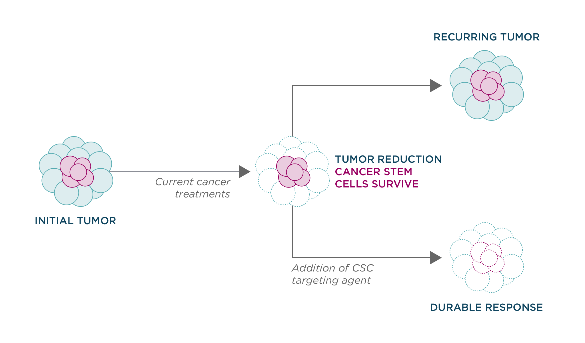

Advances in understanding cancer trough years of research from many laboratories have shed light on why some current cancer treatments may be ineffective. Within any tumor, there are different types of cancer cells, only some of which are targeted by a specific treatment. Although a therapy may be successful in killing some of these cell types, others survive and are the cause of recurrence.
A critical sub-population of tumor cells are called cancer stem cells or cancer initiating cells. These cells are only a small population of cells found in the tumor, but they are responsible for most of the cancer spread and relapse. Unfortunately, these cells are resistant to many current treatments.
Further understanding of the unique properties of cancer stem cells will be crucial for the development therapies that reduce cancer relapse and eliminate the spread of cancer throughout the body. Agilvax has identified unique targets of cancer stem cells and is developing therapies that eradicate these cells.
